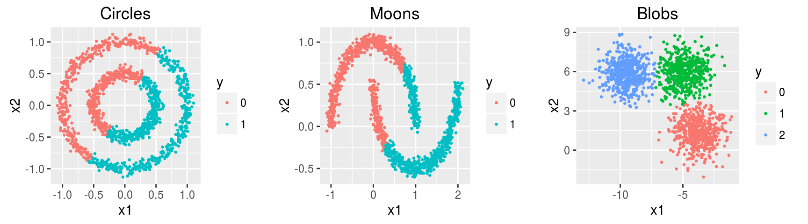

Clustering
Dataset
Three simulated datasets noisy.circles, noisy.moons, blobs of 1500 observations x 2 features containing 2, 2, and 3 clusters respectively.
head(noisy.circles)## x1 x2 y
## 1 -0.4412984 -0.26011650 1
## 2 0.6052318 -0.65733542 0
## 3 1.0344003 0.05708226 0
## 4 0.4442293 0.03467232 1
## 5 -0.2264144 0.46547732 1
## 6 0.5648620 -0.81670969 0k-means
The k-means optimization problem is to find the set C of cluster centers \(\mathbf c \in \mathbb R^m\), with \(|C| = k\), to minimize over a set of examples \(\mathbf x \in \mathbb R^m\) the following objective function: \[ \min \sum_{\mathbf x \in X} ||f(C, \mathbf x) - \mathbf x||^2 \] Here, \(f(C, \mathbf x)\) returns the nearest cluster center \(\mathbf c \in C\) to \(\mathbf x\) using Euclidean distance.
noisy.circles.km <- kmeans(noisy.circles[,1:2], centers = 2, iter.max = 100,
nstart = 10)
noisy.moons.km <- kmeans(noisy.moons[,1:2], centers = 2, iter.max = 100,
nstart = 10)
blobs.km <- kmeans(blobs[,1:2], centers = 3, iter.max = 100,
nstart = 10)
head(noisy.circles.km$cluster, 10)## [1] 1 2 2 2 1 2 2 1 2 2noisy.circles.km$centers## x1 x2
## 1 -0.4007305 0.2630556
## 2 0.4004353 -0.2627844
k-medoids
Similar to the k-means algorithm, but in the k-medoids algorithm, the center of the subset is a member of the subset, called a medoid (i.e., cluster centers \(\mathbf c \in X\)). In the k-means algorithm, the center of the subset is the centroid.
noisy.circles.pam <- pam(noisy.circles[,1:2], k = 2, cluster.only = T)
noisy.moons.pam <- pam(noisy.moons[,1:2], k = 2, cluster.only = T)
blobs.pam <- pam(blobs[,1:2], k = 3, cluster.only = T)
head(noisy.circles.pam, 10)## [1] 1 1 2 2 2 1 1 2 1 2Heirarchial Clustering
Hierarchical clustering groups data into a multilevel cluster tree or dendrogram. hclust() constructs the agglomerative hierarchical cluster tree.
Model specifications:
Linkage criteria: Complete Linkage, \(\max\{\,d(x,y):x\in {\mathcal {A}},\,y\in {\mathcal {B}}\,\}\)
Similarity measure: Euclidean distance, \(d(x, y) = \|x - y\|_2\)
Desired number of groups = 2, 2, 3 for circles, moons, blobs respectively. (This determines where to cut the tree).
# euclidean distance and complete-linkage
noisy.circles.hc <- hclust(dist(noisy.circles[,1:2]))
noisy.circles.hc.clus <- cutree(noisy.circles.hc, k = 2)
noisy.moons.hc <- hclust(dist(noisy.moons[,1:2]))
noisy.moons.hc.clus <- cutree(noisy.moons.hc, k = 2)
blobs.hc <- hclust(dist(blobs[,1:2]))
blobs.hc.clus <- cutree(blobs.hc, k = 3)
head(noisy.circles.hc.clus, 10)## [1] 1 1 2 2 2 1 1 2 1 2Remarks
Each point within a cluster gets assigned to one and only one cluster. In k-means, cluster points assigned to the same centroid belong to the same cluster. The centroid can be considered as a prototypical point inside the cluster. Similarly, k-medoids chooses medoids as cluster centers instead of the centroid. Usually a dendrogram is used to visualize the grouping produced by a hierarchical clustering algorithm. In a dendrogram, the dissimilarity between two child nodes is proportional to the height of their least common ancestor.